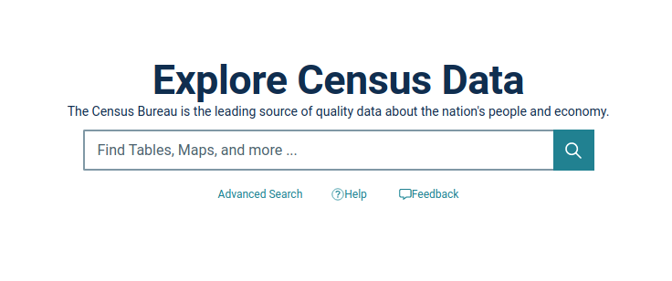

Introduction
From early 2017 to early 2021, the US Census gained a fair amount of news coverage. Both political parties seemed determined to control everything from questions on citizenship to language on gender and ethnicity. Though this remained a persistent argument during this time, the issue of potentially damaging census results was something neither party desired. This worry is due to one somewhat startling point: almost all major public and private decisions made in the US use this geographic data collection.
Whether you are a politician hoping to gain more votes through redistricting or a business planning on the most profitable location to build a store, the US Census is a crucial data set for your analysis. This diversity of use for census data demands a high level of accuracy and reliability. As a result, the US Census Bureau takes extreme care to collect, process, analyze, and deliver the data.
I'm surprised I haven't done anything on census data, given my background. However, I think it's well overdue with a new decennial census and changes to census data access.
This post is the first of a multi-part blog series on census data, going through understanding and accessing US census data to analyze it for real-world impact. So let's get into it!
What is Census Data?
A census is the collection of information about every member of a population. In the US, this data collection includes age, gender, ethnicity, and household income, representing people at varying scales, from the national to the block level. The census also includes Native American areas and US territories.
 US Census Hierarchy
US Census Hierarchy
The US Census, in particular, is collected in a few different ways. The first and most notable is the decennial census collected every ten years. The Census Bureau conducts community surveys every one, three, and five years between decennial census periods, capturing different types of estimates.
A national census is critical as governments use it to plan public services, emergency planning, and redefine voting districts, to name a few use cases. The private sector uses the census for marketing and business planning, estimating real estate, retail management, calculating insurance rates, financial planning, and more. This process is especially true in metropolitan (e.g., more densely populated) and micropolitan (e.g., more sparsely populated) urban areas.
For more information on the census, I urge you to visit the US Census Bureau website, which contains volumes of valuable and essential information. However, there is one crucial element about the data we need to discuss: geographic identifiers.
GEOID
The US Census data encompasses several data engineering factors: complex schema covering several dimensions; varying scales of geographic information within a strict hierarchy; connection to other data collections using varying data types. Geographic identifiers (GEOIDs) are unique numeric codes used to track dimensional measures across varying scales within the census. The codes are also the connective fabric between the census and other supplementary data such as TIGER, ANSI, DoE, and USGS data products.
Specific to the US Census data we’ll be using, the block code 482012231001050 follows this hierarchical pattern:
- 48 for the state
- 201 for the county
- 223100 for the census tract
- 1 for the block group
- 050 for the block
There are variations to this such as places, but these changes are identifiable in the schema for place data. The US Census data explorer helps you select and identify the GEOID structures when you search for and download the data (often captured in a metadata file).
And with that, let’s go grab some data!
Accessing Data
There are several ways to access census data. For GIS or data analysis professionals, the traditional way to access this data is to download flat files. This can be done through the census website or more directly through a FTP site. With the updates to the census data website, I would recommend that option due to the advanced query feature that will allow you to download just the fields and scale of data you need for your analysis. The US Census Bureau also provides a direct API option if you require persistent automated access to the data for more advanced data modeling.
Let’s start with the old-fashion way.
Metadata and Documentation
Whoa! Pump the brakes. Before you go ahead with downloading data, let’s make sure you’re downloading the correct data for your research! This requires reading a good amount of documentation and reviewing metadata for the appropriately identified data sets (a literature review may also help accelerate this process… just saying :D ).
The US Census maintains large amounts of data and much larger amounts of documentation. This documentation is the most critical reason why the data is one of the richest and well-maintained collections in the world. The metadata and data dictionaries make using this data for research simple as it’s provenance and legacy can be cross-validated and cross-referenced by multiple parties. The decennial census and American Community Surveys are the most commonly referenced, but there are dozens of direct and derived data sets for topic from economics to education and incarceration. Before attempting any research with census data, you should thoroughly read the documentation for the survey and/or program data you have selected.
Downloading Data
For traditional GIS analysts using ESRI or QGIS, this is perhaps the most common path to access and download census data (this may even be true for data analysts and data scientists). We start by using the Census Data Explorer.
 US Census Data Explorer{kind=link}
This is a great website that helps you understand the available data and the Census Bureau’s supporting utilities. You’ll want to click on Advanced Search underneath the search box as this is the real power of their explorer.
US Census Advanced Data Search{kind=link}
Once in this interface, you’ll notice the filters on the left side.
Codesallow you can search for relevant data based on specific code systems such as NAICS, NAPCS, EEO, and others.Geographyallows you to select the scale(s) of data for your analysis.Surveysallow you to select more specific data associated with redistricting and demographics.Topicsallows you to focus on a category of data (which is only vacancy related for me).Yearsallows you to define the temporal dimension for your data query.
So let’s grab some census data for analysis. Let’s add a 2020 filter from Year, add All Counties within Florida from Geography, and click Search in the lower right corner.
{kind=link}
You should see something like the image above. The explorer allows you to add or modify the filter to better refine your search results. Let’s select the H1 | OCCUPANCY STATUS table.
{kind=link}
By selecting the table from the list, you will see a table sample appear with schema and values. There are several tools you can use with this table including additional filters, search, table transpose, data export, data download, and the option to visit the FTP site to search additional raw data holdings. Let’s select the Download option and select the Download button in the lower right corner.
{kind=link}
A pop-up will show the export preparation and finally a signal to DOWNLOAD NOW. Save the zip file to a location of your choosing. Let’s repeat this download process for the P1 | RACE table.
{kind=link}
If you require additional information or require a complete download of multi-year, multi-code, multi-scale data, the FTP site (shown above) has the raw data holding as well as the readme materials for the census data collections.
Application Programming interface
Spatial Layers
Extracting Census Data
Code goes here
References
US Census Bureau
FiveThirtyEight
Missouri Census Data Center
This work is licensed under a Creative Commons Attribution-NonCommercial-ShareAlike 4.0 International License.